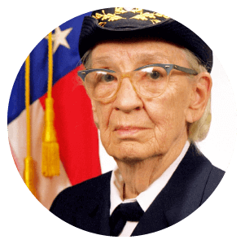

Contra-Almirante da Marinha, Grace Hopper foi uma mulher da tecnologia e da ciência nascida nos EUA no século XX.
Em 1934, ela já era Ph.D em matemática e professora.
Durante a Segunda Guerra Mundial, se alistou na WAVES e se graduou em 1º lugar na turma.
A Missão Apollo 11, ocorrida em julho de 1969, é conhecida por todos nós. Mas, ao pensarmos nela, nos lembramos de nomes como:
Neil Armstrong e Buzz Aldrin. Porém, a matemática Margaret Hamilton também teve grande importância no sucesso da missão.
Em 1959, ela começou a trabalhar como programadora e, em 1963, soube do contrato que a MIT havia feito com a NASA
para desenvolver um software que levasse o homem à Lua.
Hamilton, então, decidiu se aplicar para o projeto e logo se tornou parte da
equipe de programação. Em entrevista ao Futurism, Hamilton contou que conciliava sua vida pessoal
e profissional levando sua filha para trabalhar com ela durante a semana e os fins de semana.